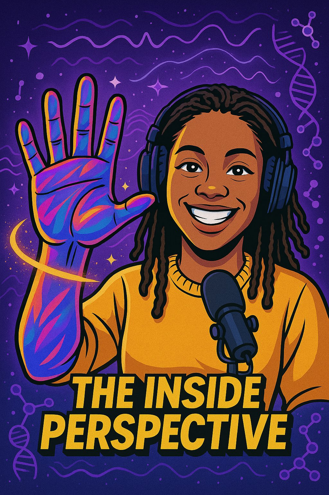

What is TiP?
Every day you make choices that affect your body, your mind, and your energy. The food you eat, the relationships you stay in, the stress you carry, the things you witness. Most of us never stop to think about what that's actually doing on the inside.
That's what this podcast is for.
The Inside Perspective is a deep dive into the inner workings of your health and healing. We talk about the real stuff: mental health, your cycle, your nervous system, confidence, rest, and everything in between. Not from a place of perfection but from a place of growth.
This is for the dedicated healers. The ones doing the work even when it's uncomfortable.

Hi, I'm Aaliyah
I have a degree in Biology and a certification in life coaching, and I started this show because those two worlds never seemed to talk to each other: the actual science of what's happening in your body, and the real, unglamorous work of doing something about it. I wanted a space that held both, without the polish that makes most wellness content feel unreachable, and a space where voices that don't usually get centered, especially Black voices, get to lead instead of being an afterthought.
I'm not here because I have it all figured out. I'm learning to take care of myself too, out loud, so you don't have to do it alone.
Three pillars
Every episode lives inside one of these three. They overlap more than you'd think, since your biology, your daily choices, and your mental health are never really separate things.
Ready to go
inside?
Subscribe and be the first to know when new episodes drop.